Aby pozbyæ siê reklam na stronach internetowych trzeba zainstalowaæ do przegl±darki rozszerzenie ADBlocker (Advertisment blocker - bloker reklam) poka¿e Ci jak to zrobiæ na przegl±darkach: Google Chrome, Opera GX, Mozilla.
-Google Chrome:
W wyszukiwarce wpisujemy Google Chrome Apps i wchodzimy na pierwsz± stronê która nam siê wy¶wietli
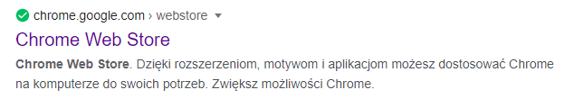
Nastêpnie w lewym górnym rogu mamy wyszukiwarkê Szukaj w sklepie i wpisujemy tam “ADBlock”
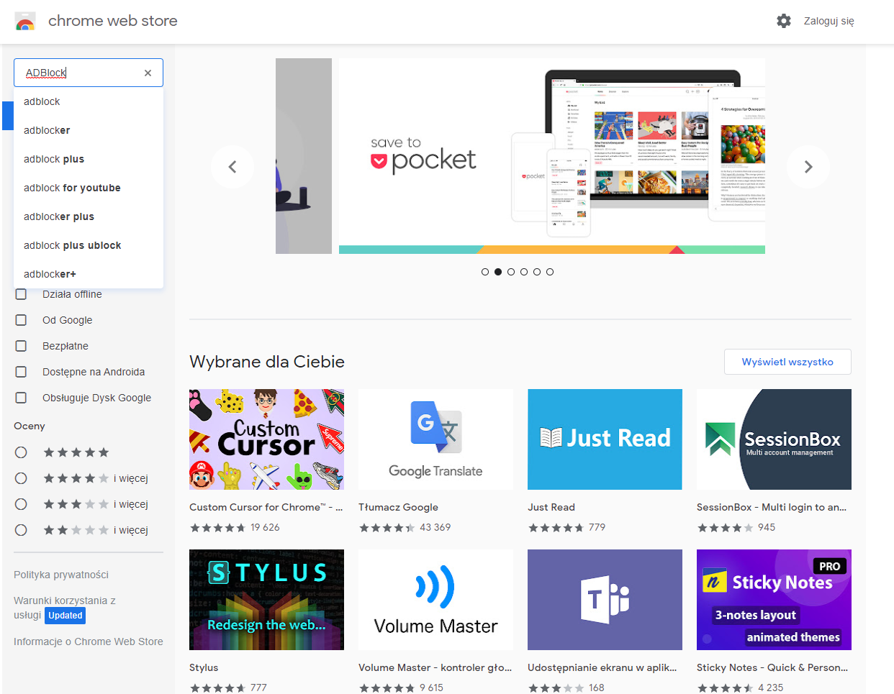
I wchodzimy w AdBlock -- najlepszy bloker reklam
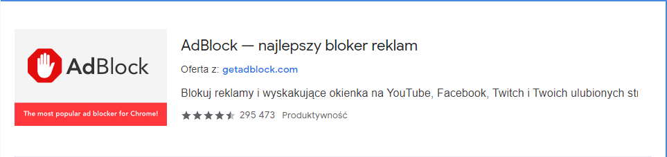
Tam klikamy niebieski przycisk Dodaj do Chrome
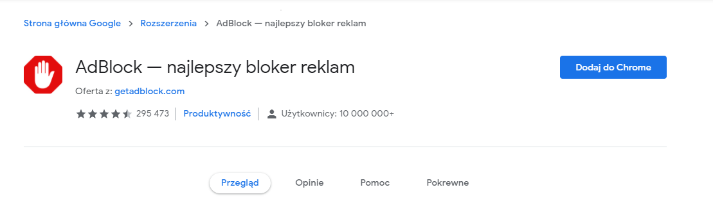
Nastêpnie musimy zatwierdziæ dodanie tego rozszerzenia do przegl±darki
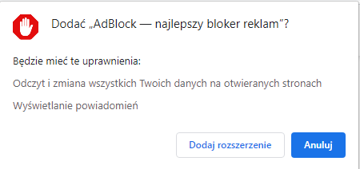
I koniec! Nasza praca z dodaniem AdBlocka do przegl±darki Chrome zakoñczona, jedyne co jest nam jeszcze potrzebne to umiejêtno¶æ wy³±czenie AdBlocka na stronach informacyjnych, poniewa¿ wyskoczy nam np. taki komunikat
Dlatego teraz gdy ju¿ musimy wy³±czyæ naszego AdBlocka przy takim powiadomieniu musimy w prawym górnym rogu ikonê puzzla
Gdy to naci¶niemy poka¿± siê nasze rozszerzenia
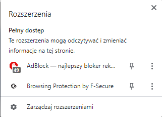
Teraz musimy nacisn±æ w naszego AdBlocka i poka¿ê nam siê ¿e mo¿emy go wy³±czyæ na tej stronie: Once - raz, Always - na zawsze
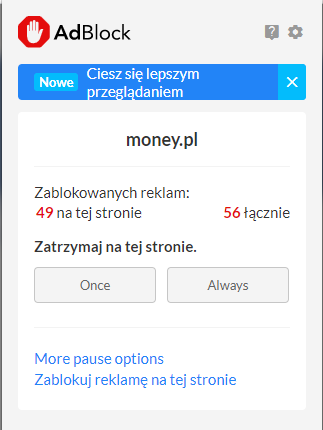
My¶lê ¿e lepiej wybraæ Always, poniewa¿ zawsze jak bêdziemy ju¿ chcieli wej¶æ na tê stronê nie bêdzie trzeba wchodziæ i wy³±czaæ na chwilke AdBlocka
-Opera GX
Gdy w³±czamy Operê GX mamy na tyle dobrze, ¿e ma ona z góry wgrany AdBlock tylko musimy go w³±czyæ
Po lewej stronie mamy pasek opcji i klikamy w niej na ko³o zêbate
Gdy jeste¶my ju¿ w ustawieniach klikamy w prawym górnym rogu Szukaj w ustawieniach i wpisujemy “Reklamy”
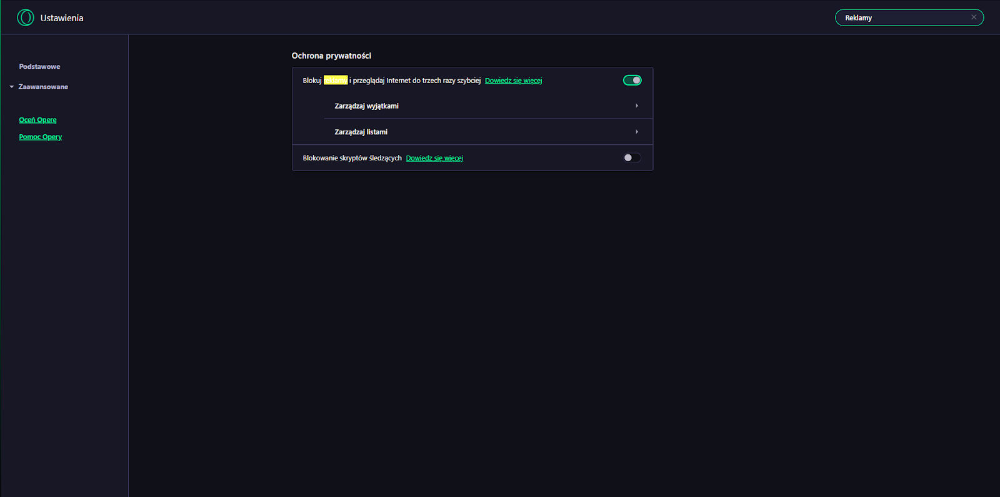
I jak mo¿emy zauwa¿yæ wy¶wietla nam siê opcja Blokuj reklamy i przegl±daj internet do trzech razy szybciej któr± jak w³±czymy to jak sama nazwa mówi wy³±czamy reklamy
I koniec! Nasza praca z dodaniem AdBlocka do przegl±darki Opera GX zakoñczona, jedyne co jest nam jeszcze potrzebne to umiejêtno¶æ wy³±czenie AdBlocka na stronach informacyjnych, poniewa¿ wyskoczy nam np. taki komunikat
Kiedy ju¿ mamy taki komunikat to w prawym górnym rogu mo¿emy zauwa¿yæ niebiesk± tarczê
Trzeba j± klikn±æ a nastêpnie wy¶wietla nam siê:
Tutaj oczywi¶cie trzeba nacisn±æ wy³±cz na tej witrynie i tyle
-Mozilla Firefox
Gdy wchodzimy w przegl±darkê w prawym górnym mamy 3 poziome paski, które gdy naci¶niemy wy¶wietl± nam siê opcjê z których musimy wybraæ Dodatki
Nastêpnie z lewej strony wybieramy Rozszerzenia
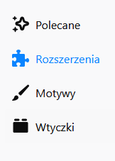
Nastêpnie u góry mo¿emy zauwa¿yæ Znajd¼ wiêcej dodatków i wpisujemy tam “AdBlock”
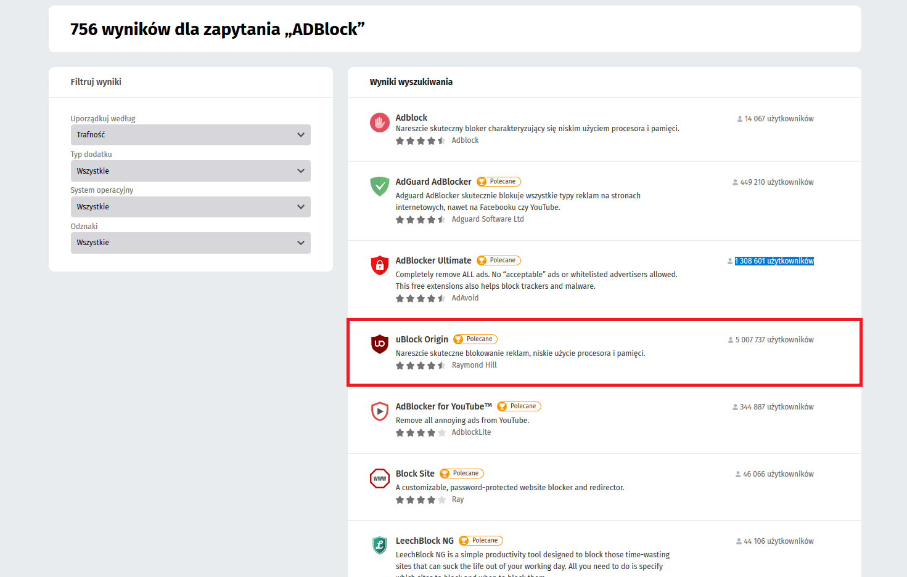
Nastêpnie wchodzimy w tego AdBlocka i instalujemy go do przegl±darki wiêc po przej¶ciu na stronê klikamy Dodaj do Firefoksa
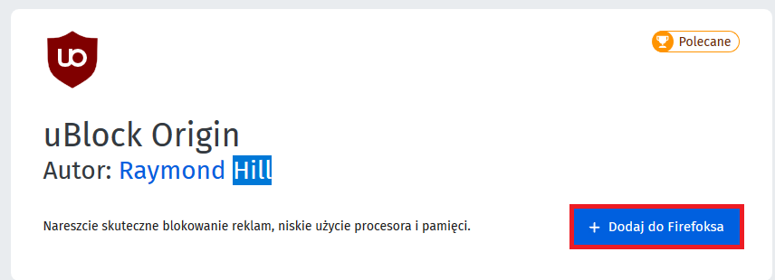
Nastêpnie ¿eby potwierdziæ instalowanie wtyczki wyskakuje powiadomienie i musimy nacisn±æ Dodaj i daæ tej wtyczce te¿ odpowiednie uprawnienia
I koniec! Nasza praca z dodaniem AdBlocka do przegl±darki Chrome zakoñczona, jedyne co jest nam jeszcze potrzebne to umiejêtno¶æ wy³±czenie AdBlocka na stronach informacyjnych, poniewa¿ wyskoczy nam np. taki komunikat
W prawnym górnym mamy bordow± tarcze która jest ikon± tego AdBlocka
Klikamy i widzimy wielki niebieski przycisk do wy³±czenia który wystarczy wcisn±æ i zrestartowaæ stronê
Tylko pamiêtaj aby potem z powrotem wy³±czyæ AdBlocka poniewa¿ sam siê nie w³±czy
Projekt realizowany na olimpiadê "Zwolnieni z Teorii" Nie ma twojego problemu? Skontaktuj siê z nami poprzez formularz
Wszystkie prawa zastrze¿one Kopiowanie i rozpowszechnianie bez zgody Nak³adka E-Pomocy zabronione